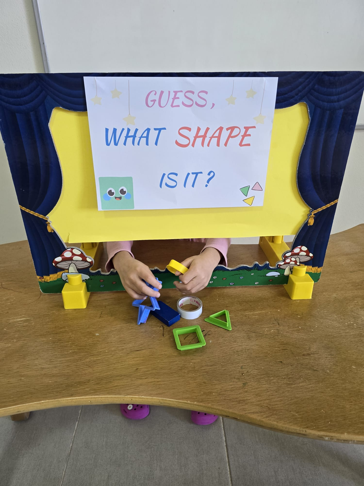

İki dil, bir dünya: İngilizce ve Arapça

Anaokulu ve ilkokul kademelerinde öğrencilerimizin gelişim düzeylerine, ilgi ve isteklerine, öğrenme hızlarına uygun olarak dil eğitimi veriyoruz
Montessori Felsefesi ışığında öğrencilerimize yaparak-yaşayarak hedef dili içselleştirme olanağı sunuyoru.
İlgi düzeylerini arttıran, materyaller ile zenginleştirilmiş derslerimizde dört temel dil becerilerinin gelişimini sağlıyoruz.
Speaking derslerimiz ile öğrencilerimizin aktif katılımını sağlayarak iletişimsel dil becerilerini üst düzeye ulaştırmayı hedefliyoruz
18 Mart Sirac Koleji olarak İngilizce ve Arapça dil eğitiminde milli ve manevi değerler ile hedef dili harmanlayarak çocuklarımızın ahlaki gelişimlerini destekliyoruz.